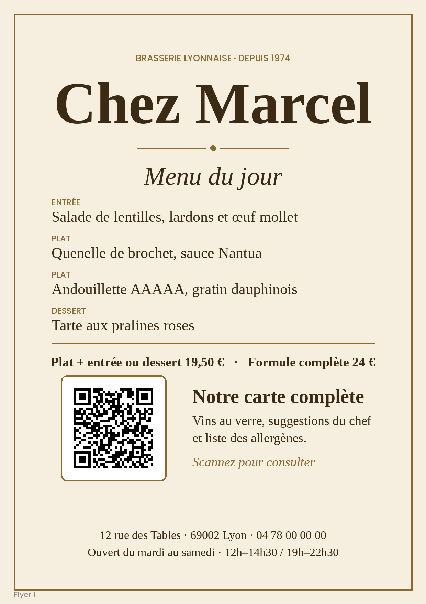

Atelier QR codes
Deux petits ateliers pour apprendre à ne pas se faire piéger. Comptez une vingtaine de minutes, sans aucune connaissance technique.
Saurez-vous repérer le piège ?
Atelier 1 : comprendre ce qu'est un QR code
Un QR code est un dessin qui cache une adresse internet. Quand vous le prenez en photo avec votre téléphone, celui-ci déchiffre le dessin et vous propose d'ouvrir cette adresse. C'est tout.
Le problème, c'est qu'à l'œil nu, on ne voit pas où il mène. Un escroc peut donc coller un faux QR code sur un vrai : tout le monde le flashera sans se méfier.
Ce qu'il faut savoir avant de jouer
- Les trois gros carrés dessinés dans les coins (en haut à gauche, en haut à droite et en bas à gauche) sont des repères. Le téléphone s'en sert pour savoir comment lire le dessin, même s'il est penché. Le coin en bas à droite n'en a pas.
- Tous les petits carrés noirs et blancs du reste du dessin forment l'adresse, écrite dans un code que seule une machine sait lire.
Pour les curieux : comment un QR code est construit
Chaque petit carré s'appelle un module : noir ou blanc. Le plus petit QR code fait 21 modules de côté, et chaque version supérieure en ajoute 4.
- Repères de position : les 3 grands carrés des coins.
- Lignes de synchronisation : des pointillés qui servent de règle pour compter les modules.
- Informations de format : elles indiquent comment le code a été construit.
- Données : l'adresse, accompagnée d'informations de secours qui permettent de lire un QR code légèrement abîmé.
Pour fabriquer un QR code, un générateur transforme le texte en données, ajoute les informations de secours, range le tout dans la grille en évitant les zones réservées, puis choisit un motif qui facilite la lecture. Une marge blanche autour du dessin aide enfin le téléphone à en repérer les bords.
À vous de jouer : remettez le QR code en ordre
Le QR code ci-dessous a été découpé en 9 tuiles, puis mélangé. Votre but : le reconstituer. Quand c'est réussi, l'aperçu à droite devient un vrai QR code.
Comment jouer
- Touchez une tuile : elle s'entoure de bleu.
- Touchez une deuxième tuile : les deux échangent leur place. (Sur ordinateur, vous pouvez aussi faire glisser une tuile sur une autre.)
- Le bouton ↻, en bas à droite de chaque tuile, la fait tourner d'un quart de tour. Une tuile est bien placée quand elle est au bon endroit et dans le bon sens.
- Regardez l'aperçu à droite et le message en dessous : ils vous disent où vous en êtes.
Par où commencer ? Cherchez d'abord les trois tuiles qui montrent un gros carré dans un coin. Placez-les aux trois coins du puzzle (en haut à gauche, en haut à droite, en bas à gauche) et tournez-les jusqu'à ce que le gros carré touche le coin extérieur. Le reste s'emboîte ensuite plus facilement. Bloqué ? Le bouton « Coup de pouce » place une tuile au bon endroit.
- gros carrés des coins (repères)
- pointillés
- informations de lecture
- adresse (données)
Aperçu du résultat
Atelier 2 : faut-il flasher ce QR code ?
Vous allez maintenant faire comme dans la vraie vie : tomber sur un QR code, et décider si vous prenez le risque de le flasher.
La consigne
- Regardez les 6 flyers plus bas, l'un après l'autre. Touchez un flyer pour l'agrandir et utilisez les flèches pour passer au suivant. Imaginez que vous le croisez dans la rue, dans votre boîte aux lettres ou au restaurant.
- Faites-vous votre avis, sans rien scanner. Pour chaque flyer, demandez-vous : « Est-ce que j'oserais flasher ce QR code ? » Répondez oui ou non, et cherchez pourquoi.
- Flashez ensuite les QR codes avec votre téléphone, un par un.
- Lisez la page qui s'ouvre. Elle vous dit tout de suite si le QR code était sûr ou piégé, et pourquoi. Avez-vous eu raison ?
Comment flasher un QR code
- Ouvrez l'appareil photo de votre téléphone. Pas besoin d'application en plus.
- Pointez-le vers le QR code et attendez une seconde.
- Une petite bulle avec une adresse apparaît en haut de l'écran. Lisez-la avant de la toucher. Si vous ne voulez pas ouvrir la page, ne touchez rien.
Un téléphone ne peut pas flasher son propre écran. Affichez cette page sur un ordinateur ou une tablette, ou regardez les flyers imprimés.
Les flyers

Flyer 1 / 6
Les bons réflexes à retenir
Les arnaques au QR code fonctionnent presque toujours de la même façon : on vous pousse à agir vite, sans réfléchir. Un QR code honnête vous donne simplement une information, comme un menu, un programme ou le Wi-Fi d'un lieu. Un QR code piégé, lui, vous demande quelque chose : de l'argent, un mot de passe ou vos données.
Mieux vaut s'abstenir
- Un message urgent : « avant ce soir », « dernière chance », « votre colis sera renvoyé ».
- Tout ce qui demande de payer, même une toute petite somme.
- Un gain ou un cadeau : « vous avez gagné un iPhone ».
- Un QR code collé sur une borne, un panneau ou une vitrine, surtout s'il est de travers ou dépasse d'un autre.
- Une page qui réclame un mot de passe, un code reçu par SMS ou un numéro de carte bancaire.
Plutôt raisonnable
- Un QR code qui renvoie vers une information : menu, programme, Wi-Fi.
- Imprimé proprement, dans un lieu cohérent, avec le nom de l'organisateur.
- Dans tous les cas, lire l'adresse que propose l'appareil photo avant d'ouvrir le lien.
Pour payer ou vous connecter à un compte, passez toujours par l'application ou le site officiel, que vous ouvrez vous-même.